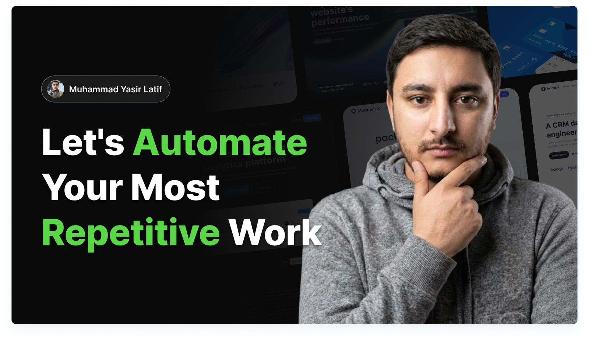

AI Products Architect●Building Scalable Content Systems●7× Author of System Design Courses @ Educative
I design AI agents and automations that take manual, repetitive work off your plate — the same caliber of systems I run at Educative to generate technical content at the scale of thousands of lessons and guides.
I'm an AI Product Architect and Technical Content Lead at Educative. I build AI pipelines and multi-agent systems — from a single lesson to a ~100-agent production platform — that generate, personalize, and ship technical learning at scale, alongside architecting flagship System Design courses end-to-end.
These pipelines route across multiple LLM providers, checkpoint every stage, and stream results live — the engineering behind a single-day run that updated ~500 blogs for SEO. Outside Educative, I take on select automation projects with the same approach: map the process first, then build only what's actually needed.
From routing a lead to orchestrating ~100 agents in production — and making sure it's fast, cheap, reliable, and usable once it's live.
Lead routing, CRM updates, invoice processing, approvals, and reports that send themselves.
Agents that research, triage, draft, and follow up — from small crews to the ~100-agent system behind Fenzo. MCP connects Claude to your tools directly.
Internal assistants that answer from your own documents, with sources attached and retrieval you can trust.
Half-finished agents and flashy no-code prototypes with no error handling underneath, made production-safe.
Model routing, prompt caching, schema validation, and per-stage checkpointing — the difference between a demo and a system that runs 24/7. Cut one production prompt ~90% cheaper.
When it's worth it, the pipeline becomes a real web or mobile app — a proper UI, not a backend trigger only you can run.
Scroll or use the arrows — click any card to read the full case study.
Choose a package, see exactly what's included at each tier, and get a defined scope before we start.
A single deep-dive article, a multi-part series, or a fully architected course curriculum — written at a senior engineer level, with real-world architecture patterns and a clear structure that keeps readers engaged.
Automation builds, AI agent packages, and platform work — scoped and priced the same way. Reach out directly in the meantime to scope something custom.
Tell me about the process eating your team's time and I'll send back a free walkthrough of how I'd automate it — no strings attached. If automation isn't the right answer, I'll say so instead.